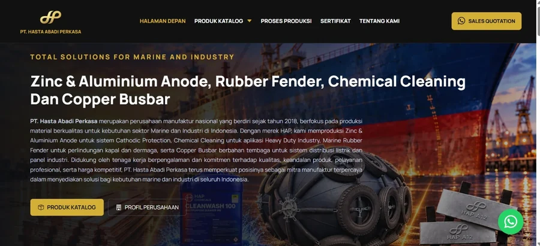
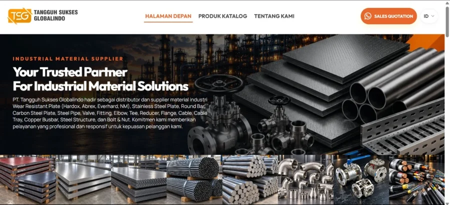
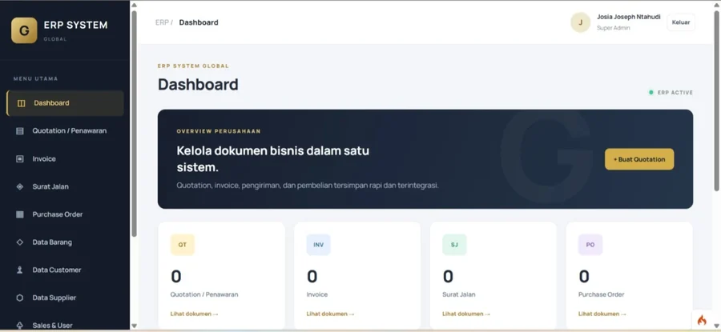
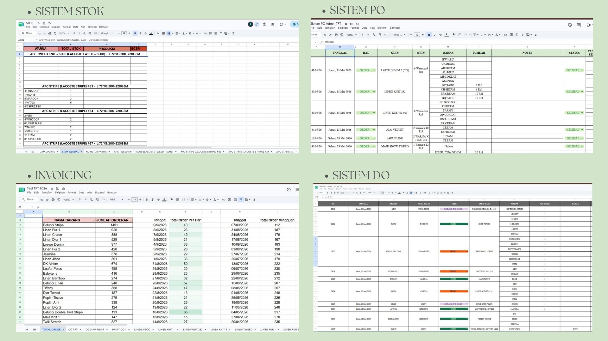
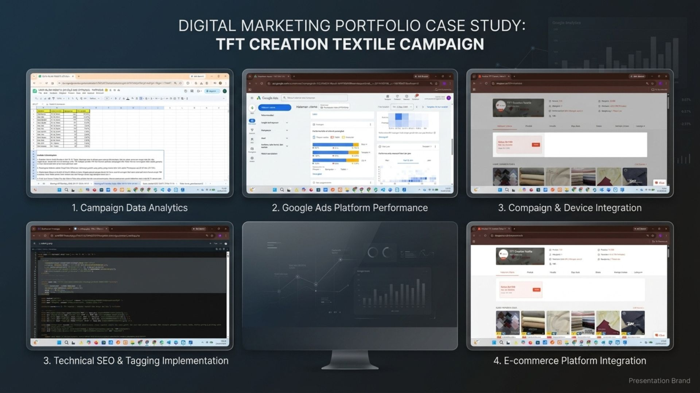

Selected work. Real impact.Karya pilihan. Dampak nyata.
A selection of web development, business systems and digital projects.Pilihan proyek pengembangan website, sistem bisnis, dan solusi digital.

01 / 06HAP Company WebsiteWebsite Perusahaan HAP
Actual HAP website showcase: marine and industrial product catalogs, production process, BKI certificates, and sales contact.Website HAP dengan katalog marine-industri, proses produksi, sertifikat BKI, serta kontak penawaran.

02 / 06TSG Industrial WebsiteWebsite Industri TSG
Industrial materials website with product catalogs, company profile, and WhatsApp quotation access.Website material industri dengan katalog produk, profil perusahaan, dan akses penawaran WhatsApp.

03 / 06ERP SYSTEM GLOBALERP SYSTEM GLOBAL
ERP dashboard for quotations, invoices, delivery orders, purchase orders, master data, user roles, and reports.Dashboard ERP untuk penawaran, invoice, surat jalan, purchase order, data master, level pengguna, dan laporan.
 04 / 06
04 / 06
TFT Creation WebsiteWebsite TFT Creation
Textile business website with a product catalog, responsive interface, and database-backed administration.Website bisnis tekstil dengan katalog produk, antarmuka responsif, dan administrasi berbasis database.
View projectLihat proyek
05 / 06Spreadsheet Automation SystemSistem Otomatisasi Spreadsheet
Operational spreadsheet system for purchase orders, delivery documents, invoices, inventory, and reporting.Sistem spreadsheet operasional untuk PO, dokumen pengiriman, invoice, inventaris, dan pelaporan.
View projectLihat proyek
06 / 06Digital Marketing & AnalyticsPemasaran Digital & Analitik
Performance marketing, marketplace SEO, campaign tracking, and analytics for commerce operations.Pemasaran berbasis performa, SEO marketplace, pelacakan kampanye, dan analitik untuk operasional bisnis.
View projectLihat proyekNo projects in this category.Tidak ada proyek dalam kategori ini.